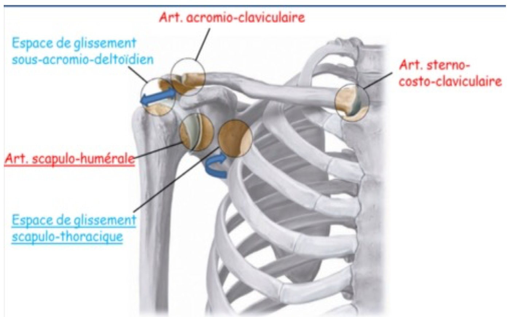
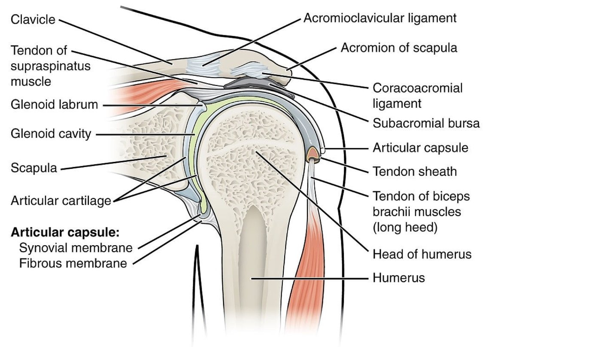
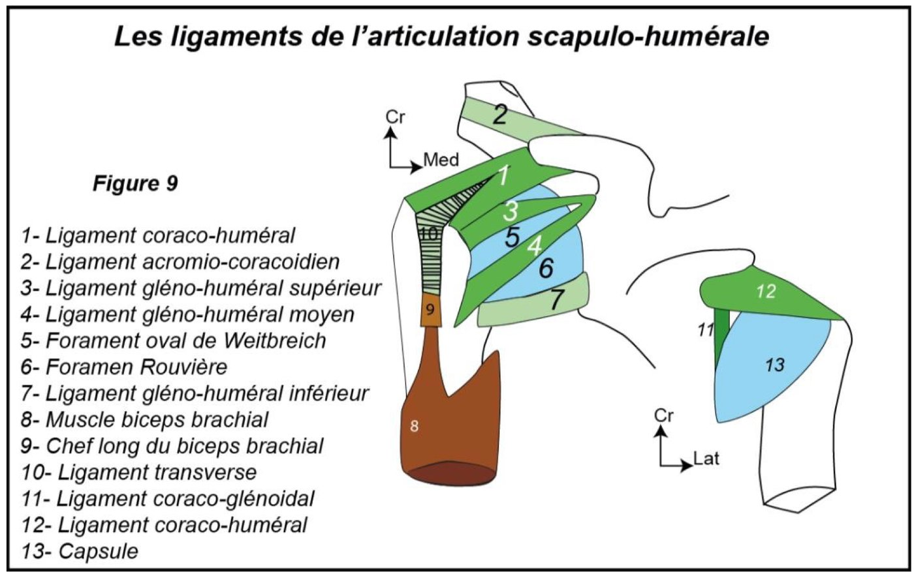

S1 · Anatomy · Summary
Shoulder joint
- Essentials
- The 5 joints
- Sternocostoclavicular
- Acromioclavicular & gliding spaces
- Scapulohumeral
- Means of union
- Movements
- Exam traps
- Self-check
If you remember only this
- Shoulder complex = 5 synergistic joints: 3 true (scapulohumeral, sternocostoclavicular, acromioclavicular) + 2 gliding spaces (subacromiodeltoid serous bursa, scapulothoracic).
- Sternocostoclavicular: saddle synovial joint with an intermediate articular disc; 2 types of modest movement (elevation/depression, anterior/posterior projection); thin capsule.
- Acromioclavicular: plane (arthrodia); capsule + acromioclavicular ligament; very slight gliding.
- Scapulohumeral: spheroid synovial joint (enarthrosis), very mobile, extremely fragile, 3 degrees of freedom.
- Glenoid labrum = fibrocartilaginous ring that deepens the glenoid; triangular in section: peripheral face continues the scapular neck, external (articular) face free, smooth, concave, internal face adherent.
- Coracohumeral ligament = the strongest; from the lateral border of the coracoid → 2 bundles: greater and lesser tubercles. 3 glenohumeral ligaments leave 2 weak spots: foramen of Weitbrecht (sup–middle) and foramen of Rouvière (middle–inf).
Introduction — the shoulder joint complex p. 2–6 slides p. 29–34
- The shoulder joins the trunk and upper limb. Double goal: great mobility (wide field for the hand) and great stability (lifting heavy loads).
- It is the proximal joint of the upper limb, highly mobile, suspended, exposed and superficial (prone to impacts). Main role: orient the limb in space for prehension; also throwing and catching.
| 3 true joints | 2 gliding spaces (false joints) |
|---|---|
| 1. Scapulohumeral 2. Sternocostoclavicular 3. Acromioclavicular | 1. Subacromiodeltoid serous bursa ("subdeltoid joint") 2. Scapulothoracic joint |

I. Sternocostoclavicular joint p. 7–8 slides p. 36–40 2023-24 · 2025-26
- Unites the medial end of the clavicle with the sternal manubrium and the 1st costal cartilage.
- Saddle synovial joint with an intermediate articular disc.
- (Slides) Surfaces united by a thin capsule reinforced by anterior, posterior, superior and inferior (costoclavicular) ligaments and the interclavicular ligament.
- 2 types of movement of modest amplitude: elevation/depression (of the shoulder) and anterior/posterior projection.
II–IV. Acromioclavicular joint and the gliding spaces p. 9 slides p. 42–48
| Joint | Type | Details |
|---|---|---|
| Acromioclavicular | Plane — arthrodia | Lateral end of the clavicle + acromion; held by a capsule and the acromioclavicular ligament; very slight gliding |
| Scapulothoracic | False joint | Gliding space between the thoracic wall (rib cage) and the anterior surface of the scapula |
| Subdeltoid (subacromiodeltoid) | Gliding space | The deltoid glides over the scapulohumeral joint thanks to the subacromiodeltoid serous bursa |
Don't swap them
Saddle + disc = sternocostoclavicular. Plane (arthrodia) + slight gliding = acromioclavicular.
V. Scapulohumeral joint — definition and surfaces p. 10–11 slides p. 50–54 2023-24 · 2024-25
Scapulohumeral (glenohumeral) joint
Proximal joint of the thoracic limb; unites the humerus to the scapula. Very mobile, extremely fragile; spheroid synovial joint
(enarthrosis).
| Surface | Features |
|---|---|
| Glenoid cavity of the scapula | At the superolateral angle of the scapula; oval; glenoid notch on its anterior border; surrounded by the glenoid labrum |
| Humeral head | Proximal epiphysis; rounded, 1/3 of a sphere of 30 mm (diameter); covered with articular cartilage; its axis makes 130° with the diaphysis (slides) |
| Glenoid labrum 🎯 | Fibrocartilaginous ring on the rim of the glenoid; increases its depth. Triangular in section, 3 faces: • Peripheral face: continues outward the surface of the scapular neck • External (articular) face: free, smooth, concave, part of the glenoid articular surface • Internal (adherent) face: tightly joined to the rim of the glenoid |

Means of union p. 11–15 slides p. 57–70 2025-26
1. Articular capsule
Thin fibrous sleeve; inserts on the peripheral face of the glenoid labrum and on the anatomical and surgical necks of the humerus.
2. Passive ligaments
| Ligament | Origin | Termination |
|---|---|---|
| Coracohumeral 🎯 — the strongest | Lateral border of the coracoid process | 2 bundles: greater tubercle (trochiter) and lesser tubercle (trochin) |
| Superior glenohumeral | Glenoid labrum + upper part of the scapular neck | Upper part of the lesser tubercle |
| Middle glenohumeral | In front of the superior one | Lower part of the lesser tubercle |
| Inferior glenohumeral | Glenoid labrum + scapular neck | Below the surgical neck |
2 zones of capsular weakness
Foramen ovale of Weitbrecht: between the superior and middle glenohumeral ligaments.
Foramen of Rouvière: between the middle and inferior glenohumeral ligaments.
Foramen of Rouvière: between the middle and inferior glenohumeral ligaments.

3. Active ligaments
Tendons of the periarticular muscles that move the joint:
| Position | Muscles |
|---|---|
| Above | Supraspinatus |
| Behind | Infraspinatus, teres minor, teres major |
| In front | Subscapularis |
| Also | Tendon of the long head of the biceps, the deltoid, tendon of the triceps |
4. Synovial membrane
Lines the deep face of the capsule up to its insertions; its synovial fluid lubricates and nourishes the articular cartilages.
5. Periarticular serous bursae
Between the capsule and periarticular muscles, to ease gliding. Main ones: subscapular, bicipital, subdeltoid, subcoracoid, and the bursa of the infraspinatus.
Functional anatomy — movements p. 16–18 slides p. 73–79 2023-24
Very mobile: 3 degrees of freedom along the 3 planes and 3 axes.
| Plane / axis | Movement | Amplitude (text) |
|---|---|---|
| Frontal plane, anteroposterior axis | Adduction (limb inward) | Pure adduction is impossible; combined with retro- or antepulsion, up to 40° |
| Abduction (limb outward) | 90° without the scapulothoracic joint, up to 180° with it | |
| Sagittal plane, transverse axis | Flexion = antepulsion (forward) | 50–80° alone, up to 180° with the scapulothoracic joint |
| Extension = retropulsion (backward) | Never more than 30°; up to 40° after abduction and posterior gliding of the scapula | |
| Transverse plane, vertical axis (forearm flexed at 90°) | Lateral (external) rotation | Limited to 30° |
| Medial (internal) rotation | Limited to 80°; an anterior tilt of the scapula completes it to 90° | |
| All | Circumduction | Combines all movements; describes a cone whose apex is the centre of the humeral head |
Exam traps
False statements to recognise
- Scapulohumeral joint "deep", "with two degrees of freedom", "pure adduction possible" — false: 3 degrees; pure adduction impossible. 2023-24
- Scapulohumeral joint "true and accessory", "not very mobile", "very mobile and very stable" — false: very mobile but unstable (fragile). 2024-25
- Labrum: "peripheral face free, smooth, convex", "internal face continues the scapular neck", "richly innervated", "heals spontaneously" — false. 2023-24
- Sternocostoclavicular joint "plane/arthrodia", "very slight gliding", "unites two surfaces", "thick capsule and two ligaments", "a gliding space with a serous bursa" — false: saddle with a disc, 3 bones, thin capsule. 2 years
- Coracohumeral ligament ends "on the anatomical/surgical neck", "by three bundles" or "by one bundle in the bicipital groove" — false: 2 bundles on the greater and lesser tubercles. 2025-26
Self-check
Name the 5 joints of the shoulder complex.
True: scapulohumeral, sternocostoclavicular, acromioclavicular. Gliding spaces: subacromiodeltoid bursa, scapulothoracic.
Type and movements of the sternocostoclavicular joint?
Saddle synovial joint with an intermediate disc; elevation/depression and anterior/posterior projection, of modest amplitude.
Type and movements of the acromioclavicular joint?
Plane (arthrodia), clavicle lateral end + acromion, capsule + acromioclavicular ligament; very slight gliding.
What is the scapulothoracic joint?
A false joint: gliding space between the rib cage and the anterior surface of the scapula.
Give 4 features of the scapulohumeral joint.
Proximal joint of the thoracic limb; very mobile; extremely fragile; spheroid synovial (enarthrosis).
Describe the humeral head.
1/3 of a sphere of 30 mm, covered with cartilage; axis at 130° to the shaft.
The 3 faces of the glenoid labrum.
Peripheral (continues the scapular neck), external/articular (free, smooth, concave), internal/adherent (fixed to the glenoid rim).
Where does the capsule insert?
Peripheral face of the labrum; anatomical and surgical necks of the humerus.
Origin and termination of the coracohumeral ligament?
Lateral border of the coracoid process → 2 bundles on the greater and lesser tubercles. It is the strongest.
Where are the foramina of Weitbrecht and Rouvière?
Weitbrecht: between superior and middle glenohumeral ligaments. Rouvière: between middle and inferior.
Which muscles form the active ligaments, by position?
Above supraspinatus; behind infraspinatus, teres minor, teres major; front subscapularis; plus biceps long head, deltoid, triceps.
Amplitudes of abduction and flexion with and without the scapulothoracic joint?
Abduction 90° → 180°; flexion 50–80° → 180°.
Limits of rotations and extension?
Lateral rotation 30°; medial rotation 80° (90° with scapular tilt); extension ≤ 30° (40° after abduction and scapular gliding).